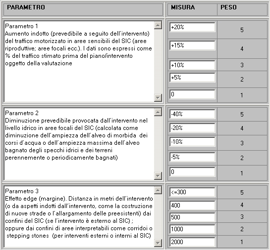
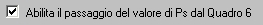

E'
possibile modificare le impostazioni del testo dei parametri e delle
misure delle tabelle per il calcolo dei diversi indicatori

Sotto
la tabella per le impostazioni del calcolo dell'indicatore Paa e
presente un'opzione per permettere il passagio automatico del valore di
Ps nel caso la valutazione sia passata attraverso il quadro 6
